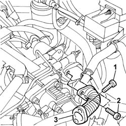

1080C76 EXPANSION JOINT ON EGR VALVE - R.R.
- Path
- Procedures > 10 ENGINE > 1080 EMISSION CONTROL SYSTEM > 1080C MOTOR FOR EGR VALVE SELF-ADJUSTMENT - R.R. > 1080C76 EXPANSION JOINT ON EGR VALVE - R.R.
- Kind
- repair procedure (removal / refitting; the operation number is the code)
- Applies to
- engines: 2.4 JTD 10V; all production periods
- Interactive page
- https://sloeber94.github.io/elrnDB-lThss/en/#/103520
Applies to: all engines; all production periods
 Removing
Removing
 Refitting
RefittingSee in Op. 1016A10
1. Undo the bolts fixing the expansion joint to the intake manifold.
2. Undo the bolts fixing the expansion joint to the EGR valve.
3. Remove the expansion joint from the housing.

Applies to: all engines; all production periods
Refitting
Removing- Fit the expansion joint in the housing and tighten the fixing bolts on the intake manifold and on the EGR valve to torque.
 | Value - daNm | Fastening | Component | Ø |
|---|---|---|---|---|
. | (Intake manifold side) | Bolt | VALVE (EGR) EXPANDING JOINT |
| Value - daNm | Fastening | Component | Ø |
|---|---|---|---|---|
. | (EGR valve side) | Bolt | VALVE (EGR) EXPANDING JOINT |
See in Op. 1016A10